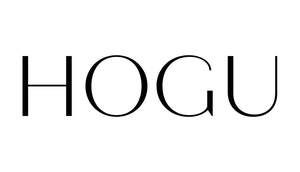

Trade Mark Journal No.2025/043 24 October 2025
UK00004278501 15 October 2025 (3,4,25,35)

- Class 3
- Cosmetics; Skincare cosmetics; Moisturisers [cosmetics]; Cosmetics and cosmetic preparations; Hair cosmetics; Skin fresheners [cosmetics]; Cosmetics for eye-lashes; Cosmetics for suntanning; Anti-aging moisturizers used as cosmetics; Organic cosmetics; Non-medicated cosmetics; Lip cosmetics; Nail cosmetics; Skin moisturizers used as cosmetics; Natural cosmetics; Mousses [cosmetics]; Colour cosmetics; Beauty care cosmetics; Facial creams [cosmetics]; Suncare lotions [for cosmetic use]; Eyebrow cosmetics; Multifunctional cosmetics; Eye cosmetics; Skin masks [cosmetics]; Skin care cosmetics; Powder compacts [cosmetics]; Cosmetics for use on the skin; Cosmetic moisturisers; Cosmetic creams and lotions; Night creams [cosmetics]; Skin recovery creams [cosmetics]; Beauty lotions; Nail paint [cosmetics]; Skin care lotions [cosmetic]; Anti-aging creams [for cosmetic use]; Sun protecting creams [cosmetics]; Cosmetic products for the shower; Nail primer [cosmetics]; Anti-ageing creams [for cosmetic use]; Smoothing emulsions [cosmetics]; Perfumed powders [for cosmetic use]; Skin cleansers [cosmetic]; Liners [cosmetics] for the eyes; Moisturising skin lotions [cosmetic]; Cosmetic creams for the skin; Skin creams [cosmetic]; Skin creams [for cosmetic use]; Body and facial gels [cosmetics]; Perfumes; Fragrances; Perfume; Colognes; Cologne.
- Class 4
- Candles; Candles and wicks for candles for lighting; Perfumed candles.
- Class 25
- Clothing; Knitwear [clothing]; Jackets [clothing]; Ready-to-wear clothing; Gloves [clothing]; Gloves as clothing; Clothes; Parts of clothing, footwear and headgear; Casual clothing; Clothing for leisure wear; Clothing for children; Clothing for babies; Clothing for infants; Men's clothing; Lingerie; Bodices [lingerie]; Panties; Underwear; G-strings; Underwear for women; Corsets [underclothing]; Nighties; Undergarments; Nightgowns; Thongs; Bras; Underclothes; Strapless bras; Hosiery; Underclothing; Nightwear; Ladies wear; Silk clothing; Nightdresses; Dresses; Swimsuits.
- Class 35
- Retail services connected with the sale of clothing and clothing accessories.
Chantelle Morris